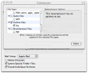
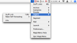

What's New in MagicMenu & StuffIt Contextual Menu 12?
Completely Rewritten!
Stuffit Magic Menu has been completely rewritten to provide an even quicker, easier way to access the power of Stuffit Deluxe directly from the finder.
MEDIA RECOMPRESSION |
|
|  | Stuffit Magic Menu version 12 now includes new technology that provides highly efficient compression of MP3s, PDFs and common image formats such as PNG, GIF, BMP, TIFF and more. Stuffit Magic Menu 12 also includes new technology that provides our best ever compression of documents created by Apple’s iWork and the new Open XML-based file format introduced by Microsoft in Office 2007. |
OTHER NEW FEATURES |
|
|  | A "Legacy" menu allows you to easily create our legacy archive formats without launching any of the Stuffit Deluxe applications. Performance and stability enhancements: Stuffit Magic Menu 12's new media recompressors, combined with our existing photo compression technology, allow Magic Menu 12 to compress files better than any previous version! |